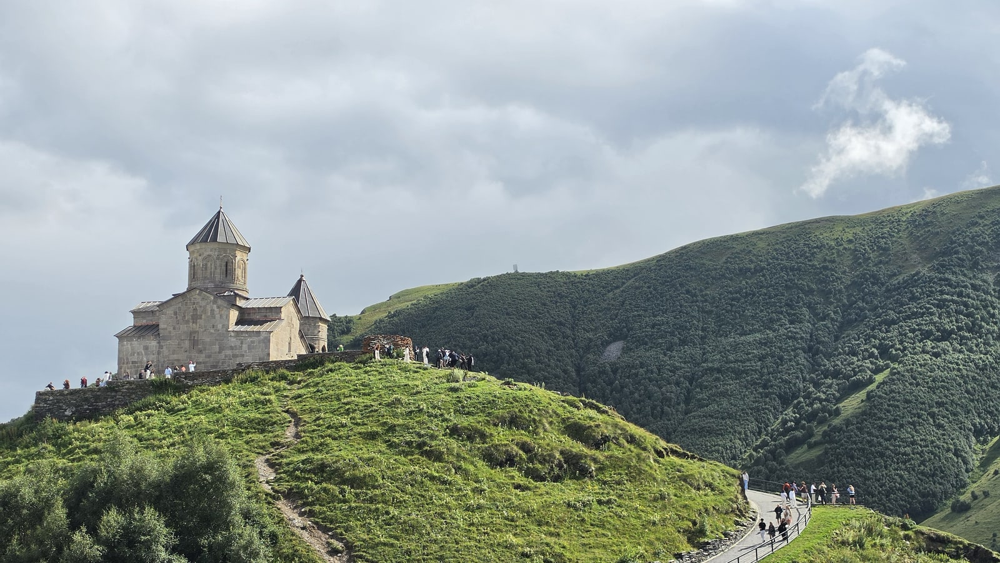
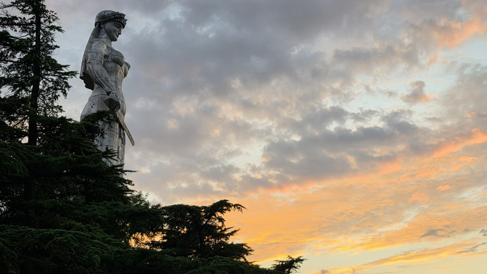
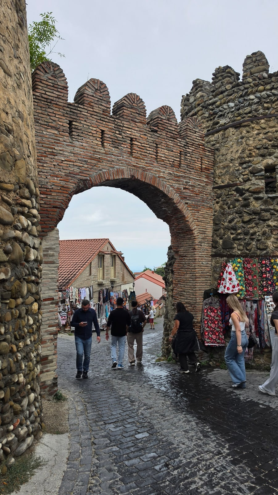

<meta charset="utf-8">
<title>조지아 여행 준비 총정리 2026 — 무비자·의무 보험 — 나의 투자 그리고 행복한 여행</title>
<meta name="description" content="조지아 여행 준비 총정리 2026: 한국인 무비자 1년, 의무 여행자보험(최소 30,000라리), 여행경보, 플러그·시차, 교통·숙소·일정·비용.">
<meta name="viewport" content="width=device-width, initial-scale=1">
<link rel="canonical" href="https://worldtraveler1.tistory.com/59">
<link rel="preconnect" href="https://fonts.googleapis.com">
<link rel="preconnect" href="https://fonts.gstatic.com" crossorigin>
<link rel="stylesheet" href="https://fonts.googleapis.com/css2?family=Hahmlet:wght@400;600;800&family=IBM+Plex+Mono:wght@400;500&family=IBM+Plex+Sans+KR:wght@300;400;500;600&display=swap">

<style>
  :root{
    --paper:#F2EEE6;--surface:#FAF8F3;--surface-2:#E7E1D5;
    --ink:#191510;--ink-2:#4A4235;--ink-3:#7D7364;
    --line:#D6CEBF;--line-soft:#E4DDD0;--accent:#B06A15;--accent-bright:#C2761A;
    --up:#E5484D;--down:#3B82F6;
    --f-display:"Hahmlet",'Nanum Myeongjo',"Apple SD Gothic Neo",serif;
    --f-body:"IBM Plex Sans KR","Apple SD Gothic Neo","Malgun Gothic",sans-serif;
    --f-mono:"IBM Plex Mono","SFMono-Regular",Consolas,monospace;
    --pad:clamp(20px,5vw,64px);
  }
  @media (prefers-color-scheme:dark){
    :root:not([data-theme="light"]){
      --paper:#0B1120;--surface:#121A2C;--surface-2:#1A2439;
      --ink:#E9EEF7;--ink-2:#A9B5C9;--ink-3:#72809A;
      --line:#26314A;--line-soft:#1D2739;--accent:#E8A33D;--accent-bright:#F0B45C;
    }
  }
  *{box-sizing:border-box;}
  body{margin:0;background:var(--paper);color:var(--ink);font-family:var(--f-body);
    font-weight:300;font-size:1rem;line-height:1.75;-webkit-font-smoothing:antialiased;}
  a{color:inherit;}
  img{max-width:100%;height:auto;}
  .wrap{max-width:760px;margin:0 auto;padding-inline:var(--pad);}
  .nav{position:sticky;top:0;z-index:20;background:color-mix(in srgb,var(--paper) 88%,transparent);
    backdrop-filter:saturate(180%) blur(12px);border-bottom:1px solid var(--line);}
  .nav-in{display:flex;align-items:center;justify-content:space-between;height:58px;}
  .brand{font-family:var(--f-display);font-weight:600;font-size:1rem;letter-spacing:-.02em;text-decoration:none;}
  .back{font-family:var(--f-mono);font-size:.72rem;color:var(--ink-3);text-decoration:none;}
  .article{padding-block:clamp(40px,7vw,72px) clamp(56px,9vw,96px);}
  .eyebrow{font-family:var(--f-mono);font-size:.68rem;letter-spacing:.16em;text-transform:uppercase;
    color:var(--accent);margin:0 0 14px;}
  h1{font-family:var(--f-display);font-weight:800;font-size:clamp(1.6rem,4.4vw,2.3rem);
    line-height:1.3;letter-spacing:-.03em;margin:0 0 16px;}
  .byline{font-family:var(--f-mono);font-size:.72rem;color:var(--ink-3);
    padding-bottom:24px;border-bottom:1px solid var(--line);margin-bottom:32px;}
  h2{font-family:var(--f-display);font-weight:600;font-size:1.25rem;letter-spacing:-.02em;margin:42px 0 14px;}
  h3{font-family:var(--f-display);font-weight:600;font-size:1.05rem;letter-spacing:-.02em;
    margin:30px 0 10px;padding-top:14px;border-top:1px solid var(--line-soft);}
  h3 .code{font-family:var(--f-mono);font-size:.7rem;font-weight:400;color:var(--ink-3);margin-left:6px;}
  p{margin:0 0 18px;color:var(--ink-2);}
  ul.checks{margin:0 0 18px;padding-left:20px;color:var(--ink-2);}
  ul.checks li{margin-bottom:8px;font-size:.94rem;}
  table{width:100%;border-collapse:collapse;font-size:.88rem;margin-bottom:8px;}
  th{font-family:var(--f-mono);font-size:.66rem;letter-spacing:.06em;text-transform:uppercase;
    color:var(--ink-3);text-align:right;padding:8px 6px;border-bottom:1px solid var(--line);}
  th:first-child{text-align:left;}
  td{padding:10px 6px;border-bottom:1px solid var(--line-soft);color:var(--ink-2);}
  td.num{font-family:var(--f-mono);text-align:right;font-variant-numeric:tabular-nums;}
  td.up{color:var(--up);} td.down{color:var(--down);}
  .scroll{overflow-x:auto;}
  figure{margin:22px 0;}
  figure img{display:block;border-radius:3px;background:var(--surface-2);}
  figcaption{margin-top:8px;font-family:var(--f-mono);font-size:.68rem;color:var(--ink-3);text-align:center;}
  .note{margin-top:34px;padding:16px 18px;border-left:3px solid var(--accent);
    background:var(--surface);border-radius:0 3px 3px 0;}
  .note p{margin:0;font-size:.85rem;color:var(--ink-3);}
  .foot{border-top:1px solid var(--line);background:var(--surface);padding-block:30px 38px;}
  .foot p{margin:0;font-size:.8rem;color:var(--ink-3);}
</style>

<nav class="nav">
  <div class="wrap nav-in">
    <a class="brand" href="../index.html">나의 투자 그리고 행복한 여행</a>
    <a class="back" href="../index.html#stocks">← 시황으로</a>
  </div>
</nav>

<main class="wrap article">
  <p class="eyebrow">Market</p>
  <h1>조지아 여행 가이드 (2026) — 입국·보험·교통·일정·비용 글 모음</h1>
  <p class="byline">여행 · 2026-09-14 기준</p>

  <p>한 줄 요약: 한국인 무비자 1년, 2026년부터 여행자보험 의무(최소 보장 30,000라리), 플러그는 한국과 같은 C·F형 220V, 한국보다 5시간 늦습니다.</p>
  <p>2026년 8월 12~20일 여행 기록을 바탕으로 한 조지아 한국어 글 10편의 허브입니다. 입국 조건은 외교부 재외공관·미국대사관 공지를 참고했습니다.</p>
  <p>※ 이 글에는 클룩 제휴 링크가 들어 있습니다. 링크를 통해 예약하시면 글쓴이가 일정 수수료를 받을 수 있으며, 예약하시는 가격은 같습니다.</p>
  <figure><figcaption>카즈베기의 게르게티 삼위일체 성당 (2026.8.14 15:56 촬영)</figcaption></figure>
  <h2>8박 9일 날짜별 동선</h2>
  <ul class="checks">
    <li>8월 12일  밤 도착 — 공항에서 앱 호출 차량으로 숙소(약 17,000원)</li>
    <li>8월 13일  트빌리시 — 조지아 연대기, 구시가지, 케이블카, 어머니상 노을, 평화의 다리</li>
    <li>8월 14일  카즈베기 투어 — 진발리, 아나누리, 구다우리, 게르게티 (28,300원)</li>
    <li>8월 15일  트빌리시 — 구시가지 골목, 가브리아제 시계탑, 자유광장 야경</li>
    <li>8월 16일  카헤티 투어 — KTW 와이너리, 보드베 수도원, 시그나기 (22,400원)</li>
    <li>8월 17일  아르메니아 투어 — 하그파트, 세반 호수, 예레반 (118,800원)</li>
    <li>8월 18일  트빌리시 — 트빌리시 해, 므타츠민다 야경</li>
    <li>8월 19일  트빌리시 — 시장, 하차푸리, 지하철</li>
    <li>8월 20일  출국 — 337번 버스로 공항(1라리)</li>
  </ul>
  <p>근교는 모두 트빌리시 출발 당일 투어로 다녀왔고, 투어가 끝나면 그날 밤 트빌리시로 돌아왔습니다.</p>
  <h2>1. 입국 — 무비자 1년, 그리고 의무 여행자보험</h2>
  <p><b>무비자 1년</b> — 조지아 법이 바뀌어 2015년 6월 9일부터 한국 국민의 무비자 체류 기간이 1년으로 늘었습니다(외교부 재외공관 공지).</p>
  <p><b>2026년 1월 1일부터 여행자보험 의무</b> — 조지아에 입국하는 외국인 관광객은 체류 기간 전체를 보장하는 건강·상해 보험을 갖고 있어야 합니다.</p>
  <ul class="checks">
    <li>최소 보장 — 30,000라리(약 1,600만 원) 이상</li>
    <li>대상 — 관광 목적으로 입국하는 외국인</li>
    <li>확인 — 국경에서 제시를 요구할 수 있고, 없으면 입국 거부 등 불이익을 받을 수 있습니다</li>
    <li>준비 — 보장 금액과 기간이 적힌 영문 증권을 휴대폰과 종이로 함께 챙기세요</li>
  </ul>
  <div class="note"><p>무비자라는 말만 믿고 보험 없이 가면 안 됩니다. 2026년에 새로 생긴 조건이라 예전 여행 후기에는 없는 내용입니다. 출발 전에 보장 금액이 30,000라리를 넘는지, 영문 증권이 나오는지 보험사에 확인하세요.</p></div>
  <h2>2. 안전 — 외교부 여행경보 확인</h2>
  <p>외교부 해외안전여행(0404.go.kr)에서 조지아는 지역별로 여행경보가 다르게 지정돼 있습니다. 러시아와 맞닿은 분리 지역인 압하지야와 남오세티야는 일반 관광 지역보다 높은 단계입니다.</p>
  <p>트빌리시, 카즈베기, 카헤티 같은 일반 관광지는 이 두 지역과 떨어져 있습니다. 다만 조지아 정부 허가 없이 두 지역에 들어가면 이후 조지아 입국이 거부될 수 있다고 안내되고 있으니 일정에 넣지 않는 게 좋습니다.</p>
  <p>출발 직전에 0404.go.kr에서 지역별 최신 단계를 한 번 더 확인하세요.</p>
  <h2>3. 기본 정보 — 플러그는 한국과 같습니다</h2>
  <ul class="checks">
    <li>전기 — C·F형 플러그, 220~230V. 한국 충전기를 그대로 씁니다</li>
    <li>시차 — UTC+4. 한국보다 5시간 늦습니다 (한국 오후 5시 = 조지아 낮 12시)</li>
    <li>통화 — 라리(GEL). 2026년 8월 14일 기준 1라리 ≈ 543원</li>
    <li>긴급 전화 — 112</li>
    <li>아르메니아 — 한국인 무비자(연 180일), 시간대도 조지아와 같습니다</li>
  </ul>
  <figure><figcaption>트빌리시의 조지아의 어머니상 (2026.8.13 20:04 촬영)</figcaption></figure>
  <h2>4. 공항 이동</h2>
  <p>공항에서 시내까지는 337번 버스(1라리, 06:59~22:59)와 앱 호출 차량이 있습니다. 저는 밤에 도착해서 앱으로 차를 불렀고(약 17,000원), 출국 날에는 337번을 탔습니다(40~50분).</p>
  <div style="text-align:center;margin:30px 0"><a href="https://danielmoon82.github.io/moon/posts/georgia-airport-to-tbilisi-2026-09-14.html" target="_blank" rel="nofollow sponsored noopener" style="display:inline-block;padding:15px 28px;background:#E34948;color:#fff;font-weight:700;font-size:18px;text-decoration:none;border-radius:8px"><b>▶ 트빌리시 공항 ↔ 시내 교통 정리</b></a></div>
  <h2>5. 시내 교통</h2>
  <p>교통카드(메트로머니) 2라리에 1일권 3라리를 넣으면 지하철과 버스를 하루 종일 탑니다. 1회 요금은 1라리, 90분 안 환승 무료입니다. 케이블카(2.5라리)와 므타츠민다 푸니쿨라는 요금이 따로입니다.</p>
  <div style="text-align:center;margin:30px 0"><a href="https://danielmoon82.github.io/moon/posts/tbilisi-public-transport-2026-09-14.html" target="_blank" rel="nofollow sponsored noopener" style="display:inline-block;padding:15px 28px;background:#E34948;color:#fff;font-weight:700;font-size:18px;text-decoration:none;border-radius:8px"><b>▶ 트빌리시 대중교통·교통카드 정리</b></a></div>
  <h2>6. 숙소</h2>
  <p>저는 트빌리시 중앙역 근처 에어비앤비 신축 아파트에 묵었습니다. 1박 약 65,000원, 아주 깔끔했고 지하철로 구시가지까지 10~15분이었습니다. 걸어서 다니려면 구시가지·솔로라키, 교통과 가성비는 역 주변이 좋습니다.</p>
  <div style="text-align:center;margin:30px 0"><a href="https://danielmoon82.github.io/moon/posts/tbilisi-where-to-stay-2026-09-14.html" target="_blank" rel="nofollow sponsored noopener" style="display:inline-block;padding:15px 28px;background:#E34948;color:#fff;font-weight:700;font-size:18px;text-decoration:none;border-radius:8px"><b>▶ 트빌리시 숙소 지역별 비교</b></a></div>
  <h2>7. 트빌리시 일정</h2>
  <p>시내 핵심은 이틀이면 봅니다. 첫날은 구시가지와 나리칼라 노을, 둘째 날은 시계탑·시장·므타츠민다 야경을 추천합니다.</p>
  <div style="text-align:center;margin:30px 0"><a href="https://danielmoon82.github.io/moon/posts/tbilisi-oneday-course-2026-09-14.html" target="_blank" rel="nofollow sponsored noopener" style="display:inline-block;padding:15px 28px;background:#E34948;color:#fff;font-weight:700;font-size:18px;text-decoration:none;border-radius:8px"><b>▶ 트빌리시 하루 코스 (실제 동선)</b></a></div>
  <div style="text-align:center;margin:30px 0"><a href="https://danielmoon82.github.io/moon/posts/tbilisi-3day-itinerary-2026-09-14.html" target="_blank" rel="nofollow sponsored noopener" style="display:inline-block;padding:15px 28px;background:#E34948;color:#fff;font-weight:700;font-size:18px;text-decoration:none;border-radius:8px"><b>▶ 트빌리시 3일 일정</b></a></div>
  <h2>8. 근교 당일 투어 세 곳</h2>
  <figure><figcaption>카헤티 시그나기의 성문 (2026.8.16 15:10 촬영)</figcaption></figure>
  <ul class="checks">
    <li>카즈베기(28,300원) — 산과 성당. 늦가을~봄에는 눈으로 도로가 통제될 수 있습니다</li>
    <li>카헤티(22,400원) — 와인과 수도원, 성곽 마을 시그나기</li>
    <li>아르메니아(118,800원) — 하루에 한 나라 더. 밤 11시 넘어 귀환</li>
  </ul>
  <div style="text-align:center;margin:30px 0"><a href="https://affiliate.klook.com/redirect?aid=135164&aff_adid=1430619&k_site=https%3A%2F%2Fwww.klook.com%2Fko%2Factivity%2F107209-tbilisi-kazbegi-gudauri-zhinvali-guided-group-tour%2F" target="_blank" rel="nofollow sponsored noopener" style="display:inline-block;padding:15px 28px;background:#E34948;color:#fff;font-weight:700;font-size:18px;text-decoration:none;border-radius:8px"><b>▶ 클룩 카즈베기 투어 (제휴 링크)</b></a></div>
  <div style="text-align:center;margin:30px 0"><a href="https://affiliate.klook.com/redirect?aid=135164&aff_adid=1430621&k_site=https%3A%2F%2Fwww.klook.com%2Fko%2Factivity%2F141324-kakheti-sighnaghi-city-of-love-bodbe-9-wine-tasting%2F" target="_blank" rel="nofollow sponsored noopener" style="display:inline-block;padding:15px 28px;background:#E34948;color:#fff;font-weight:700;font-size:18px;text-decoration:none;border-radius:8px"><b>▶ 클룩 카헤티 와인 투어 (제휴 링크)</b></a></div>
  <div style="text-align:center;margin:30px 0"><a href="https://affiliate.klook.com/redirect?aid=135164&aff_adid=1430623&k_site=https%3A%2F%2Fwww.klook.com%2Fko%2Factivity%2F141780-discover-armenia-tbilisi-akhpat-dilijan-sevan-yerevan-tbilisi%2F" target="_blank" rel="nofollow sponsored noopener" style="display:inline-block;padding:15px 28px;background:#E34948;color:#fff;font-weight:700;font-size:18px;text-decoration:none;border-radius:8px"><b>▶ 클룩 아르메니아 당일 투어 (제휴 링크)</b></a></div>
  <figure><figcaption>카헤티 와이너리의 크베브리 (2026.8.16 10:53 촬영)</figcaption></figure>
  <div style="text-align:center;margin:30px 0"><a href="https://danielmoon82.github.io/moon/posts/kazbegi-daytour-2026-09-14.html" target="_blank" rel="nofollow sponsored noopener" style="display:inline-block;padding:15px 28px;background:#E34948;color:#fff;font-weight:700;font-size:18px;text-decoration:none;border-radius:8px"><b>▶ 카즈베기 투어 기록</b></a></div>
  <div style="text-align:center;margin:30px 0"><a href="https://danielmoon82.github.io/moon/posts/kakheti-wine-tour-2026-09-14.html" target="_blank" rel="nofollow sponsored noopener" style="display:inline-block;padding:15px 28px;background:#E34948;color:#fff;font-weight:700;font-size:18px;text-decoration:none;border-radius:8px"><b>▶ 카헤티 와인 투어 기록</b></a></div>
  <div style="text-align:center;margin:30px 0"><a href="https://danielmoon82.github.io/moon/posts/armenia-daytrip-from-tbilisi-2026-09-14.html" target="_blank" rel="nofollow sponsored noopener" style="display:inline-block;padding:15px 28px;background:#E34948;color:#fff;font-weight:700;font-size:18px;text-decoration:none;border-radius:8px"><b>▶ 아르메니아 당일치기 기록</b></a></div>
  <h2>9. 비용</h2>
  <figure><figcaption>트빌리시의 힌칼리 (2026.8.18 18:55 촬영)</figcaption></figure>
  <p>숙소 8박(1박 약 65,000원 기준) 약 52만 원, 투어 세 개 169,500원, 공항 이동 약 17,000원. 식비는 조지아 식당 메뉴판 기준 힌칼리 5개 11~15라리, 하차푸리 18~21라리였습니다.</p>
  <div style="text-align:center;margin:30px 0"><a href="https://danielmoon82.github.io/moon/posts/georgia-travel-cost-2026-09-14.html" target="_blank" rel="nofollow sponsored noopener" style="display:inline-block;padding:15px 28px;background:#E34948;color:#fff;font-weight:700;font-size:18px;text-decoration:none;border-radius:8px"><b>▶ 조지아 여행 경비 정리</b></a></div>
  <h2>출발 전 체크리스트</h2>
  <ul class="checks">
    <li>여권 — 조지아·아르메니아 모두 필요</li>
    <li>여행자보험 — 최소 보장 30,000라리 이상, 체류 전 기간, 영문 증권</li>
    <li>데이터 — 도착하자마자 앱 택시를 부르려면 eSIM이나 유심</li>
    <li>호출 앱 — 출발 전에 설치하고 가입해 두기</li>
    <li>현금 소액 — 시장, 마슈르트카 등 현금만 받는 곳 대비</li>
    <li>편한 신발 — 구시가지와 나리칼라는 돌길과 경사</li>
    <li>얇은 겉옷 — 카즈베기처럼 고도가 높은 곳은 한여름에도 서늘</li>
    <li>외교부 해외안전여행 — 출발 직전 지역별 여행경보 확인</li>
  </ul>
  <h2>자주 묻는 질문</h2>
  <p><b>한국인은 조지아 비자가 필요한가요?</b></p>
  <p>필요 없습니다. 2015년 6월 9일부터 무비자로 1년까지 머물 수 있습니다. 다만 2026년부터는 여행자보험이 입국 조건입니다.</p>
  <p><b>조지아 여행자보험은 꼭 들어야 하나요?</b></p>
  <p>네. 2026년 1월 1일부터 외국인 관광객은 체류 기간 전체를 보장하는 건강·상해 보험(최소 30,000라리)을 갖고 있어야 하고, 없으면 입국 거부 등 불이익이 있을 수 있습니다.</p>
  <p><b>조지아 전기 플러그는 한국과 같나요?</b></p>
  <p>같은 C·F형, 220~230V입니다. 한국 충전기를 어댑터 없이 씁니다.</p>
  <p><b>조지아는 며칠이 적당한가요?</b></p>
  <p>트빌리시만 보면 2~3일, 근교 투어를 두세 개 넣으면 5~6일 이상이 좋습니다. 저는 8박 9일 동안 시내 나흘, 투어 사흘을 다녔습니다.</p>
  <p><b>조지아는 안전한가요?</b></p>
  <p>외교부 여행경보는 지역별로 다르고, 분리 지역인 압하지야·남오세티야는 높은 단계입니다. 출발 전 0404.go.kr에서 확인하세요.</p>
  <h2>정리하면</h2>
  <p>조지아 여행 준비는 어렵지 않습니다. 여권과 여행자보험, 데이터만 챙기면 나머지는 현지에서 교통카드 한 장으로 해결됩니다.</p>
  <p>2026년에 달라진 건 보험 하나입니다. 이것만 놓치지 않으면 무비자 1년의 나라를 편하게 다녀올 수 있습니다.</p>
  <p style="font-size:12px;color:#999;line-height:1.6;margin-top:36px">방문 날짜와 시각은 2026년 8월 12~20일 여행 중 찍은 사진의 촬영 시각(조지아 현지 시각)으로 확인했습니다. 요금·운영 정보는 2026년 9월 13~14일에 확인한 공개 정보이며 바뀔 수 있습니다. 원화 환산은 조지아 중앙은행 2026년 8월 14일 환율(1,000원 = 1.8403라리)로 계산한 대략치입니다. 한국인 무비자 체류 기간은 외교부 재외공관 공지, 의무 여행자보험은 주조지아 미국대사관 공지(2025년 12월 31일)와 현지 보도, 여행경보는 외교부 해외안전여행을 참고했습니다. 입국 조건과 여행경보는 수시로 바뀔 수 있으니 출발 전 공식 채널에서 다시 확인하시기 바랍니다.</p>
</main>

<footer class="foot">
  <div class="wrap"><p>나의 투자 그리고 행복한 여행 · 투자 판단의 참고 자료일 뿐, 매수·매도를 권유하지 않습니다.</p></div>
</footer>
